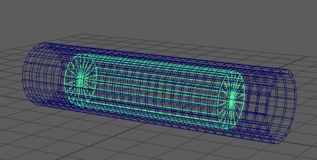

接近度包裹变形器允许您使用几何体作为驱动者来修改其他（“目标”）几何体。创建变形器节点后，需要设置“驱动者”(Drivers)，然后使用“属性编辑器”(Attribute Editor)的“接近度包裹”(Proximity Wrap)选项卡中的“管理驱动者”(Manage Drivers)菜单连接它们。（有关详细信息，请参见接近度包裹变形器选项的“属性编辑器”(Attribute Editor)区域。）
与其他 Maya 变形器（需要在应用命令之前选择要变形的几何体）不同，使用接近度包裹变形器时，必须在运行命令之后连接几何体和驱动者。
但是，可以在目标几何体上创建接近度包裹变形器之前或之后创建“驱动者”，但一定要将它们全都连接。
提示： 可以使用“接近度包裹”(Proximity Wrap)变形器绑定蒙皮，而不是使用蒙皮簇，这样，您可以在“属性编辑器”(Attribute Editor)的“接近度包裹属性”(Proximity Wrap Attributes)构件中对绑定进行额外的控制。若要使用“接近度包裹”(Proximity Wrap)绑定而不是传统蒙皮簇，请从绑定蒙皮选项(Bind Skin Options)的“变形器节点”(Deformer Node)菜单中选择“接近度包裹”(Proximity Wrap)。
可以使用“接近度包裹”(Proximity Wrap)变形器属性中的“衰减速率比例”(Dropoff Rate Scale)属性控制来自驱动者的反向距离权重。
创建接近度包裹变形器
提示： 可以使用“接近度包裹”(Proximity Wrap)变形器作为 ProxNet 变形器，将变形驱动者几何体的影响应用于驱动者的其他变形版本，而不是应用于其原始的未变形形状。请参见将接近度包裹用作 ProxNet 变形器
- 在“大纲视图”(Outliner)、视口或节点编辑器(Node Editor)中选择要变形的对象。这是驱动者几何体引导的几何体。
- 选择“变形 > (创建)接近度包裹”(Deform > (Create) Proximity Wrap) >
 （“变形”(Deform)菜单显示在“动画”(Animation)、“建模”(Modeling)和“绑定”(Rigging)菜单集中）。
（“变形”(Deform)菜单显示在“动画”(Animation)、“建模”(Modeling)和“绑定”(Rigging)菜单集中）。
- 设置创建选项，例如，“包裹模式”(Wrap Mode)，这是驱动者用于影响几何体的方法（有关每个设置及其功能的描述，请参见接近度包裹变形器选项）。
- 单击“应用并关闭”(Apply and Close)以创建选定几何体的变形器。
提示： 某些接近度包裹变形器选项(Proximity Wrap Deformer Options)（例如“管理驱动者”(Manage Drivers)）仅显示在“属性编辑器”(Attribute Editor)的“接近度包裹”(Proximity Wrap)选项卡（应用接近度包裹后显示）中。
- 在接近度包裹变形器对象/节点仍处于选中状态时，打开属性编辑器(Attribute Editor)。
注： Maya 会为要变形的每个对象创建接近度包裹变形器节点，从而您将看到“接近度包裹 1”(Proximity Wrap 1)、“接近度包裹 2”(Proximity Wrap 2)等，如“属性编辑器”(Attribute Editor)中的选项卡所示。
- 在“属性编辑器”(Attribute Editor)中，切换到“接近度包裹 1”(Proximity Wrap1)选项卡，展开“接近度包裹属性”(Proximity Wrap Attributes)，然后使用“固定选项卡”(Pin Tab)图标
 来固定选项卡。
来固定选项卡。
- 在“大纲视图”(Outliner)、视口或节点编辑器(Node Editor)中，选择基本体以表示变形的驱动者。
- 在“属性编辑器接近度包裹 1”(Attribute Editor > Proximity Wrap1)选项卡中，展开“管理驱动者”(Manage Drivers)菜单，然后选择“将选定项添加为驱动者”(Add Selected as Driver)。选定基本体将成为创建并连接到变形器的驱动者。
注： 若要添加多个驱动者几何体，请按住 Shift 键并选择几何体，然后在“管理驱动者”(Manage Drivers)菜单中单击“将选定项添加为驱动者”(Add Selected as Driver)。
- 若要为新驱动者配置设置，请选择“编辑新驱动者默认值”(Edit New Driver Defaults)以打开接近度包裹驱动者(Proximity Wrap Drivers)窗口。
您可以变换驱动者的几何体以影响绑定或使目标几何体变形。
